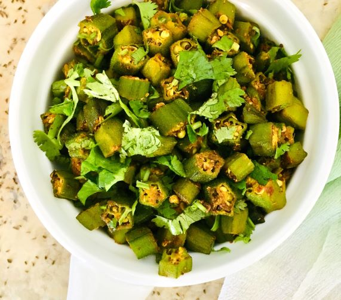

ભીંડા શાક

સમગ્રીઓ
| 500 ગ્રામ ભીંડા |
| 3 ચમચી તેલ |
| 1 ટીસ્પૂન જીરું |
| ½ ટીસ્પૂન સરસવના દાણા |
| ¼ ટીસ્પૂન કેરમ બીજ |
| ½ ટીસ્પૂન હળદર પાવડર |
| એક ઉદાર ચપટી હીંગ |
| 1-1½ ચમચી મીઠું |
| 2 ચમચી ધાણા જીરું પાવડર |
| 2 ચમચી ઝીણી સમારેલી તાજી કોથમીર |
બનાવવા ની રીત
✬ ધોઈ લો અને રસોડાના ટુવાલથી સૂકવી લો.
✬ બંને છેડા કાપી નાખો.
✬ ભીંડાને લગભગ ½" જાડા રાઉન્ડમાં કાપો.
✬ એક પહોળા પેનમાં મધ્યમ તાપ પર તેલ ગરમ કરો.
✬ જ્યારે તે ગરમ થાય ત્યારે તેમાં સૌપ્રથમ સરસવના દાણા નાખો. પછી તેમાં જીરું અને કેરમ ઉમેરો.
✬ હિંગ અને હળદર પાવડર ઉમેરો.
✬ તરત જ કાતરી ભીંડા અથવા ભીંડા ઉમેરો.
✬ સારી રીતે ભેળવી દો.
✬ ગરમી ઓછી કરો અને કડાઈને ઢાંકી દો.
✬ ભીંડાને 10 મિનિટ સુધી પાકવા દો. ક્યારેક-ક્યારેક ઢાંકણ ઊંચકીને ભીંડાને હળવા હાથે હલાવો.
✬ ઢાંકણને દૂર કરો અને ભીંડાને વધુ 7-10 મિનિટ માટે પકાવો. તમે તમારા સ્પેટુલા વડે સરળતાથી એક ટુકડો કાપી શકો છો કે કેમ તે જોવા માટે તપાસો.
✬ તેમાં લાલ મરચું પાવડર, ધાણા જીરુ ઉમેરીને બરાબર મિક્ષ કરી લો.
✬ તપેલીને તાપ પરથી ઉતારી લો. મીઠું નાખીને બરાબર મિક્ષ કરી લો.
✬ સમારેલી તાજી કોથમીરથી ગાર્નિશ કરીને રોટલી અને દાળ સાથે સર્વ કરો